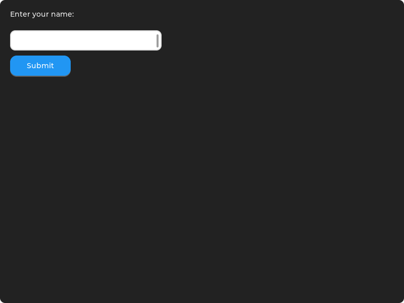
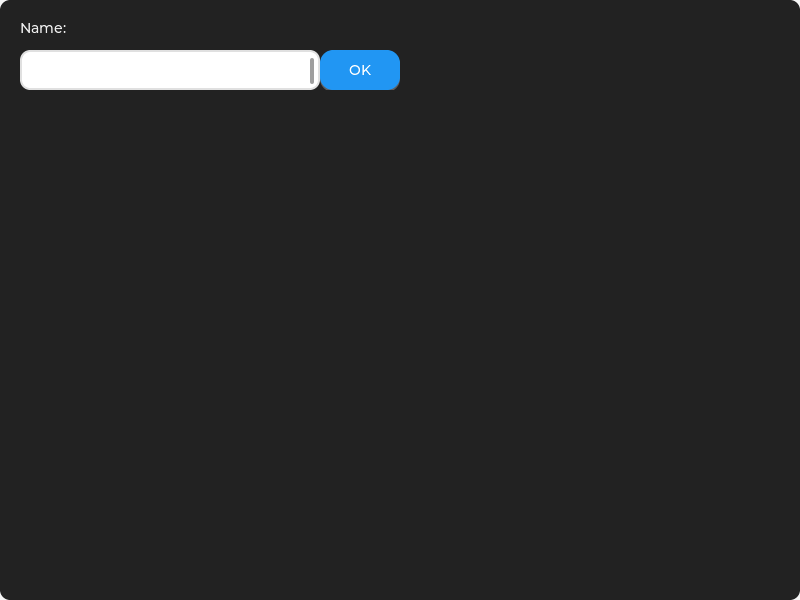
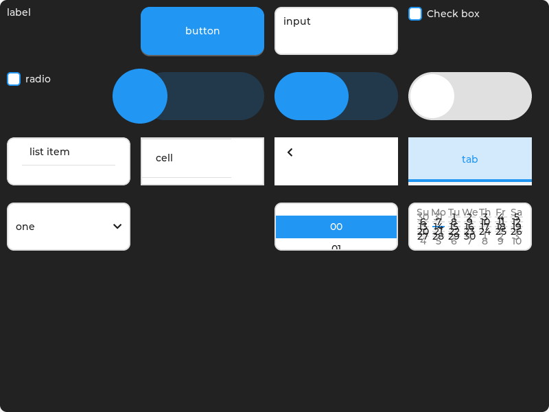

从字符终端逐层长出的图形窗口系统（display server + 程序）
TGS 是一套显示服务器（display server）：首先是一个 xterm 级终端（PTY + VT 模拟 + 渲染），在此之上叠加图形能力——widget、窗口、焦点、事件。设计遵循 X11 模型：服务器持有机制，策略归程序（WM 是一个客户端，不是服务器的一部分）。
bash、vim、htop）零改动直接运行，图形是叠加层。| 层 | 内容 | 状态 |
|---|---|---|
| L0 | 字符终端：PTY、VT 模拟、字符渲染 | 完成 |
| L1 | 字符 + 图形同一程序（文本与 TGS 帧交错） | 完成 |
| L2 | 单窗口 + size-notify + widget 集 + 事件 + resize→relayout + 焦点/键盘导航 + 容器几何回传 | 完成 |
| L3 | styles + 全 widget 库 + 容器 + 多窗口 + resources + IME | 进行中 structure 切片已完成（GRID / 多窗口 / 协议收敛） |
| L4+ | 客户端像素表面、场景合成、WM 程序、嵌套 | 未开始 |

simple_form 场景：label + input + button，即 L0 验收程序的渲染结果。

container 场景：VLAYOUT 纵向堆叠 + HLAYOUT 横向排列 + 嵌套容器。布局后合成器通过 NTF_GEOMETRY 把每个子控件的实际坐标和大小回传给程序。

library 场景：20 种 widget 类型逐一渲染（label / button / input / checkbox / radio / slider / progress / switch / list / table / menu / tab / dropdown / image / timepick / datepick / vlayout / hlayout / glayout / scroll）。
tools/render_demo.c 生成：驱动真实 LVGL 后端（合成器同款代码路径）到内存帧缓冲，输出 PNG，无需显示服务器。htop、ls 以零 TGS 代码运行；test_term.cpp 覆盖模拟器与解复用。wm_backend_event 单一门控转发。NTF_FOCUS + reason）；Tab/Shift+Tab 前后移动、箭头方向移动、SET_FOCUS 程序化聚焦、窗口激活/失活焦点对。WGT_LAYOUT 支持 [cols, rows]，3 子项在 2 列网格中正确换行。NTF_GEOMETRY(69) 布局后把每个容器/控件的屏幕绝对坐标回传，客户端 tgs_client_get_widget_geometry 查询。WINDOW_RESTORE）。NTF_DESTROY(66)、NTF_STATE(67)（激活切换成对通知）落地发射。EVT_BIND 从 no-op 变为真实订阅门控：
NTF_FOCUS 永不门控。依据：设计文档 §F.2 记录 EVT_FOCUS 因 "requires EVT_BIND" 被退休——证明 bind 即门控是既定意图；KEY 按 §D.1 流图保持无条件。
WGT_UPDATE 对齐为 content-only [widget_id, value]（spec 的 property 维度从未定义）。TGS_LAYOUT_GRID 修复（原 flex 桩）；TGS_STYLE_FONT_SIZE 仍为 no-op（待 resources 字体机制）。| 项 | 值 |
|---|---|
| 自动化测试 | 72/72 通过（gtest，11 套件），ctest 1/1 |
| 覆盖 | 帧编解码、PTY、VT 模拟、导航/焦点、事件门控、容器几何、多窗口激活、LVGL 点击命中、GRID 布局 |
| 证据链 | 每个修复都做红→绿（stash 前失败 / 恢复后通过） |
| 工作树 | 干净（提交 28b1918、d8faf76、9407940 等） |
TGS_STREAM_RESOURCE 资源上传/缓存，gate IMAGE widget 与 FONT_SIZE。
TGS_STYLE_FONT_SIZE 生效（需字体机制）+ 样式查询通道。
preedit 覆盖层（§H.2）+ 候选条（IME_CANDIDATES/IME_SELECT 目前静默丢弃）。